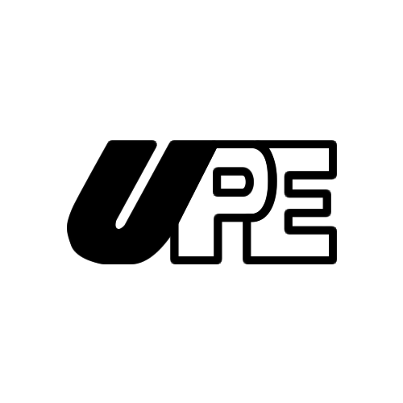

Hey! This is my resume, an overview of things I've accomplished. In case you feel curious or interested
about
anything you see here, message me on LinkedIn!
Professional Experience
neuroUP
Currently work as Systems Engineer @ NeuroUP (Portuguese only). A
startup
funded by the Brazilian government.
- Develop biological signals monitoring systems
- Design and develop games using biological signals as inputs
- Design and develop UIs for medical systems
- All Scrum managed
Current occupation since 2015
Recife, Brazil

Gorlami! Games
Game Dev @ Gorlami!
- Developed games using Unity3D
- Managed the coding project
- Scrum managed
from 2017 to 2019
Recife, Brazil
Stefanini
Intern @ Stefanini Document Solutions (Portuguese only)
- Creation of scanned document management systems
- Developed web interfaces
- Tested software and worked on documentation
- Also Scrum managed
from 2013 to 2014
Recife, Brazil
Education

Computer Engineering BS
@ Universidade de Pernambuco
- C Language Teaching Assistant (1 year)
- Computing Intelligence, Game Design, Image Processing Researcher (2 years)
from 2009 to 2014
Recife, Brazil

Computer Science BS
@ University of California, Irvine
- Group behavior patterns researcher
- Sponsored by the Brazilian Federal Government
from 2012 to 2013
Irvine, CA, USA
Computer Science Summer Course
@ Stanford University
- Computer graphics and web development
- Sponsored by the Brazilian Federal Government
Summer of 2013
Stanford, CA, USA
Skills
- User experience and user interfaces lover
- Passionate about designing and developing games
- Unity3D developer with a love for 2D games
- Adobe tools user
- Experiences with Java, C and C# and open to any new language
- HTML, CSS, Javascript, jQuery e Django. Always open to new techs
- Android programming while at university
- Database techs like MySQL and SQL Server
- Speak English, Spanish, French, Brazilian Sign Language (I'd love to learn new sign languages)
and
Portuguese is my native language